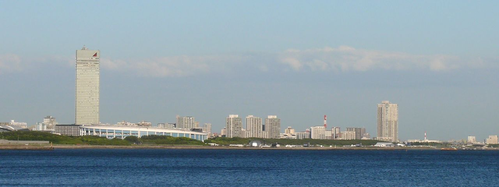
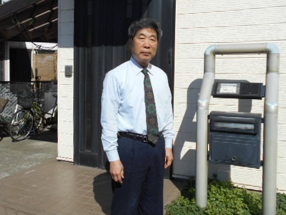
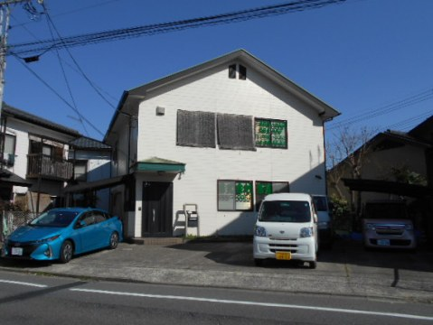

会社概要Company
1980年の創立以来、千葉の道路・河川・上下水道を、設計・測量・補償で支えてきました。良質な社会資本を提供するために、時代に適合した技術と感性あふるる人材により、良質で経済性の高い成果品の供給を行ないます。
Philosophy
発注者のよき技術的パートナーとして、「誠意・工夫・正確」を強く意識しながら、継続的な向上に努めます。
- 経営理念PHILOSOPHY
良質な社会資本を提供するために、時代に適合した技術と感性あふるる人材により、良質で経済性の高い成果品の供給を行なう。
- 品質方針QUALITY POLICY
私たちは、社会と共に育ち、社会に貢献することを目指し、発注者のよき技術的パートナーとして、「誠意・工夫・正確」を強く意識しながら、より高い品質管理システムを構築し、継続的な向上に努めます。
- 品質目標QUALITY OBJECTIVE
顧客のニーズに応えるため、技術の研鑽と創意で、総合建設コンサルタントとして高品質の成果品を提供する。
Message
『大切な地球を守りたい』
これが私達の根底にある考え方です。
現在、私達を取り囲む環境は、想像をはるかに超える速度で変化しています。
地球の温暖化に伴う暴風雨発生の増加、干ばつ、砂漠化････。
又、石油の高騰、代替えエネルギー源であるとうもろこしの値上がりは、食料危機の拡大を招いています。
このような状況の中、我々に何が出来るのでしょうか？
二酸化炭素の排出削減に貢献出来る！ 化石燃料の代替え研究開発は、どうだろうか？
事の大小を考えずやろうと思えば、ほとんどの事が可能です。
はじめの一歩は千葉県から！地球環境は循環型です。
多様な水生生物が住む川を作るには、豊富な水、たくさんの動植物、栄養を貯える陸地を整備しなければならない。
その川が私達のふるさと【海】を育てる。
『人と植物と動物が共存する』
そんな原風景と文明は、相反するでしょうか？
代表取締役金木 武夫
【確認：M&A後の代表者表記・写真】

Profile
- 商号
- 株式会社 恵進コンサルかぶしきかいしゃ けいしんこんさる
- 所在地
- 〒260-0851
千葉県千葉市中央区矢作町151番地1 - TEL
- 043-222-0053（代表）
- FAX
- 043-225-5355
- info@ksin.co.jp
- 代表者
- 代表取締役 金木 武夫【確認：M&A後の代表者表記】
- 創立
- 昭和55年12月11日
- 資本金
- 1,000万円
- 職員数
- 12名
- 取引先銀行
- 京葉銀行 本町支店
- グループ
- 【確認：親会社・グループ会社の表記を載せるか】
掲載内容は現行サイトの会社概要より。【確認：各項目が最新か】
Registration
建設コンサルタント・補償コンサルタント・測量業・土地家屋調査士事務所。4つの登録を一社で持っています。
登録部門
- 建設コンサルタント登録第 建07-6992号
- 補償コンサルタント登録第 補05第3499号
- 測量業者登録第 (8)-17023号
- 鈴木博也土地家屋調査士事務所千葉 第2201号
【確認：登録番号の有効期限】
加盟団体
Qualification
技術士2名、RCCM 2名、測量士7名、一級土木施工管理技士2名、土地家屋調査士など、14種の資格を持つ技術者がいます。
- 技術士（上下水道部門）下水道1名
- 技術士（建設部門）河川、砂防及び海岸・海洋1名
- RCCM（下水道部門）1名
- RCCM（道路部門）1名
- 一級土木施工管理技士2名
- 土地家屋調査士1名
- 宅地建物取引士1名
- 土地区画整理士1名
- 補償業務管理士（土地調査部門）1名
- 測量士7名
- 測量士補2名
- 地籍調査管理技術者1名
- 地籍主任調査員1名
- 1級管工事施工管理技士1名
- 合計（延べ人数・14種）22名
現行サイトの資格者数より。【確認：人数の基準日】
Access

- 所在地
- 〒260-0851
千葉県千葉市中央区矢作町151番地1 - TEL
- 043-222-0053（代表）
- FAX
- 043-225-5355
- 交通
- 【確認：最寄り駅・交通手段】